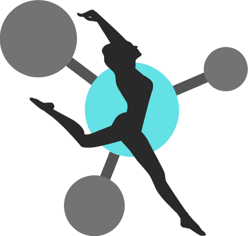

Conectividad
Diseñada con enfasis en la conectividad, TDAxis es construido para ser el centro de control del performance
Imagenes y sonidos que responden a los movimientos del cuerpo.
Diseñada con enfasis en la conectividad, TDAxis es construido para ser el centro de control del performance
Diseñado con una arquitectura modular para que cada usuario puede elegir cual es la mejor manera de utilizarlo.
Flujo de trabajo que agiliza el prototipado e invita a la experimentación tanto a desarrolladores como a artistas
Crece contigo, utiliza o modifica lo que necesites basado en tus necesidades
Hemos recopilado y compartido todas las capturas de movimientos realizadas durante el desarrollo del proyecto. Puedes cargar las capturas de movimiento a Axis Neuron y experimentar con diferentes parametros o utilizarlo para introducir variaciones "aleatorias" a piezas audiovisuales ya creadas.
Descargar Capturas
Potencia gráfica, conectividad, flexibilidad y multiplataforma.
Ableton Live para el sonido y la música de cada performance.
Traje cinético de captura de movimientos de bajo costo
TDAxis es el producto del trabajo de Grado de Simon Pineda y Matías Macías para optar por el titulo de Ingenieros de Diseño en Entretenimiento Digital de la Universidad Pontificia Bolivariana en Medellín, Colombia. Es un una serie de componentes de TouchDesigner diseñados para recibir procesar e interpretar datos provenientes de un sistema de motion capture con el objetivo de utilizarlos como elementos de control y generación en un entorno de arte generativo basado en datos. TDAxis utiliza OSC para comunicarse entre los diferentes softwares por lo cual sus señales pueden ser recibidas y utilizadas en cualquier programa que reciba este tipo de datos.
si deseea leer mas sobre el proceso de diseño, la metodologia que se utilizo o leer el documento final puede ir a la pagina de Notion en la cual se realizo el seguimiento del proyecto o descargar el documento completo.